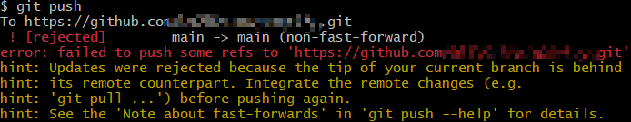

Git 的使用及出现的问题
Git教程 Git Bash详细教程-CSDN博客
(´∇｀) 被你发现啦~ git与github常用教程 | Only My Ego (onecanx.github.io)
1. Git 基本命令
创建仓库
1
2
| 初始化一个 git 仓库: git init
克隆一个 git 仓库: git clone 仓库链接
|
设置用户名和邮箱
1
2
| git config --global user.name "你的用户名"
git config --global user.email "你的邮箱"
|
添加文件和提交文件
1
2
3
| 添加所有文件到缓存: git add .
添加某一文件到缓存: git add 文件名
将缓存区内容添加到仓库中（-m 添加提交注释） git commit -m "提交注释"
|
查看更新状态
1
2
3
4
5
6
7
| 查看相关文件的状态(只显示更新的状态): git status
Modified: 已修改; Added: 已添加; Deleted: 已删除; Renamed: 重命名
查看更新的详细信息(可以显示已写入缓存与已修改但尚未写入缓存的改动的区别): git diff
尚未缓存的改动: git diff
查看已缓存的改动: git diff --cached
查看已缓存的与未缓存的所有改动: git diff HEAD
显示摘要而非整个 diff: git diff --stat
|
取消缓存和删除文件
1
2
3
4
5
| 取消已缓存/已提交的内容: git reset HEAD 文件名
删除文件: 删除完文件要重新添加缓存并提交
rm 文件名
git add 文件名
git commit -m "删除+文件名" 文件名
|
删除远程仓库指定文件夹或文件：
https://blog.csdn.net/qq_41460383/article/details/105809895
移动或重命名文件
1
2
| git mv 原文件名 文件名
git mv 文件名 原地址 目标地址
|
查看提交历史
1
2
3
4
5
6
7
8
| git log
可选选项:
–oneline: 查看历史记录的简洁版本
–graph: 查看历史中什么时候出现了分支、合并
–reverse: 逆向显示所有日志
–author: 查找指定用户的提交日志
–since、–before、 --until、–after: 指定帅选日期
–no-merges: 选项以隐藏合并提交
|
2. Git 分支命令
查看分支命令
创建分支命令
1
| 创建分支命令: git branch (分支名)
|
切换分支命令
1
| 切换分支命令: git checkout (分支名)
|
合并分支命令
不同分支可能会存在相同名字的文件，不能全部进行合并。
1
| 合并分支命令: git merge (副分支名)
|
删除分支命令
1
| 删除分支命令: git branch -d (分支名)
|
3. Git 远程仓库
3.1 添加、查看、删除远程仓库
1
2
3
| 添加仓库: git remote add 别名 远程仓库链接
查看别名: git remote -v
删除仓库: git remote rm 别名
|
3.2 推送和拉取仓库
1
2
3
4
5
| 提取远程仓库: git fetch (相当于是从远程获取最新版本到本地,不会自动合并)
提取远程仓库: git pull (相当于是从远程获取最新版本并 merge 到本地,本地版本会被远程版本覆盖)
推送仓库: git push (推送新分支与数据到某个远程仓库)
如果本地仓库和远程仓库实际上是独立的两个仓库，–allow-unrelated-history 选项来解决。
git pull 别名 分支 –allow-unrelated-history
|
3.3 创建、追加、查看标签
1
2
3
| 创建标签: git tag -a <tagname> (-a 选项可以添加标签注释)
追加标签: git tag -a <tagname> -m "标签注释"
查看标签: git tag
|
4. 实例
1
2
3
4
5
| git remote add 别名 远程仓库链接 // 起别名
git pull 别名 分支名 // 拉项目
git add . // 添加到暂存区
git commit -m "提交注释" // 提交给git管理
git push 别名 分支名 // 提交到GitHub
|
Git 常用基本命令使用详细大全_git 命令-CSDN博客
5. 出现的问题
git push 本地推送到远程仓库时发生错误

这是因为远程 repository 和本地的 repository 冲突导致的。
修改 Github 仓库文件名
文件名可以直接在 Github 上面修改；文件夹名只能在命令行进行修改。
1
2
3
4
| 1. 打开 git bash 进入文件路径
2. git mv 原文件夹名 修改后文件夹名
3. git commit -m "修改后文件夹名"
4. git push 上传到远程仓库
|
新建/切换分支出现：fatal: Not a valid object name: ‘master’
出现在新建 git 仓库时，创建分支名或切换分支，出现原因是：刚创建的 git 仓库默认的 master 分支要在提交第一次 commit 之后才会真正建立。
解决方法：先进行一下 git add 和 git commit，之后就可以切换了。
1
2
| git add . 或 git add 任意文件
git commit -m "xxx"
|
Git 新建分支出现报错：“fatal: Not a valid object name: ‘master‘.“_idea 新建git分支报错-CSDN博客
1
2
3
4
| $ git pull origin main
From github.com:OBITOoaoa/docsify
* branch main -> FETCH_HEAD
fatal: refusing to merge unrelated histories
|
当您遇到 fatal: refusing to merge unrelated histories 错误时，这意味着 Git 检测到尝试合并的两个历史记录之间没有共同的祖先提交。这通常发生在以下几种情况：
- 初次推送本地分支到远程仓库：如果您在本地创建了一个新的仓库，并且远程仓库也有内容，Git 会认为这两个仓库的历史是不相关的。
- 克隆了一个空仓库并添加了新的提交：如果克隆了一个空的远程仓库，然后在本地进行了提交，再尝试将这些提交推送到远程仓库，也可能会出现这种情况。
- 从不同的项目或分支导入代码：如果您试图合并来自不同项目的代码库，或者合并两个没有共同历史的分支，也会遇到这个问题。
我是属于第三种，在其代码模块后加上这个参数，强制合并，忽视提交的历史，之后通过代码模块的不同进行合并即可
1
| git pull origin master --allow-unrelated-histories
|
显示冲突的文件：进行修改即可
1
2
3
4
5
6
7
8
9
10
| $ git pull origin main --allow-unrelated-histories
From github.com:OBITOoaoa/docsify
* branch main -> FETCH_HEAD
Auto-merging Notes/C语言/C语言面试(一).md
CONFLICT (add/add): Merge conflict in Notes/C语言/C语言面试(一).md
Auto-merging Notes/C语言/C语言面试(三).md
CONFLICT (add/add): Merge conflict in Notes/C语言/C语言面试(三).md
Auto-merging index.html
CONFLICT (add/add): Merge conflict in index.html
Automatic merge failed; fix conflicts and then commit the result.
|
屏蔽目录或文件
在本地仓库目录下新建文件 .gitignore，打开文件添加需要屏蔽的目录或文件。
1
2
3
4
5
| touch .gitignore
node_modules
server/uploads/*
|
git忽略某个目录或文件不上传_git不提交某个文件-CSDN博客
修改 commit 注释
分两种情况：
- 已经 push 到远程仓库
- 未 push 到远程仓库
1
2
3
4
5
6
7
8
9
10
|
git rebase -i HEAD~2
pick 改为 edit
保存退出
git commit --amend
保存退出
git rebase --continue
git push --force origin master
|
Git使用小技巧【修改commit注释, 超详细】_git更改commit描述-CSDN博客